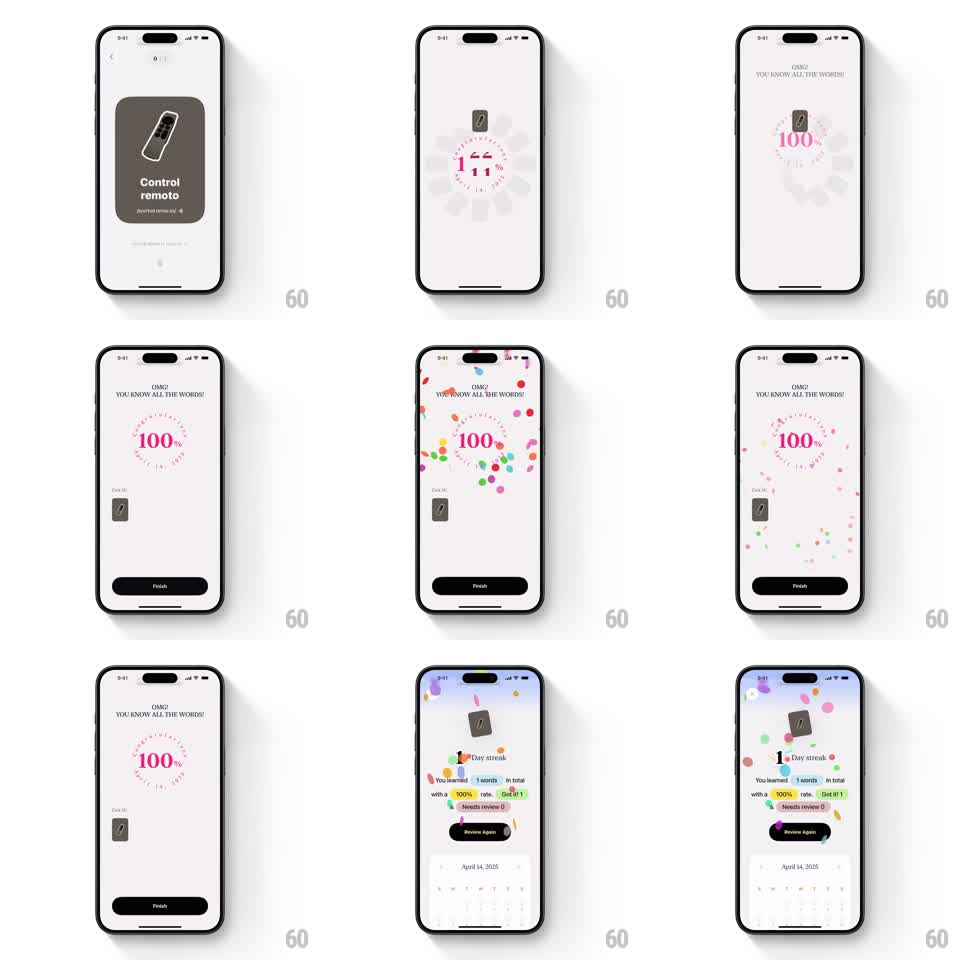

Media
Frame-by-frame

Rebuild this animation 1:1: CapWords' streak celebration flow - after the final card ("Control remoto"), a pink circular progress ring counts to 100% with "OMG! YOU KNOW ALL THE WORDS!", confetti rains, then the view slides into a streak dashboard: "1 Day streak", learned stats with colored chips, a Review Again button, and an April 2025 calendar with confetti settling over it.

Rebuild this animation 1:1: CapWords' streak celebration flow - after the final card ("Control remoto"), a pink circular progress ring counts to 100% with "OMG! YOU KNOW ALL THE WORDS!", confetti rains, then the view slides into a streak dashboard: "1 Day streak", learned stats with colored chips, a Review Again button, and an April 2025 calendar with confetti settling over it.
## Integration
Integration: stack-agnostic spec - springs given as stiffness/damping, timed motions as duration + curve; map every value to your framework and animation library of choice.
## Scene
Light screens. Start: the last practice card (gray "Control remoto" card with a remote cutout). Celebration: pink dashed ring with "100%", the headline "OMG! YOU KNOW ALL THE WORDS!", a small "Got it!" thumbnail, black Finish button. Dashboard: "1 Day streak" header, "You learned 1 words in total with a 100% rate", chips ("Got it! 1", "Needs review 0"), Review Again button, and a month calendar (April 14, 2025 highlighted).
## Motion spec
Pattern: count-up celebration transitioning into a stats dashboard.
- The card flips away (rotateY 90deg, 250ms) as the pink ring draws to 100% (900ms ease-out) with the percentage ticking in sync (digit roll).
- "OMG! YOU KNOW ALL THE WORDS!" pops in above the ring (scale 0.8 -> 1.05 -> 1, spring ~320/16).
- Confetti rains from the top (40-50 pieces, pink/yellow/blue/green, 1.5s, gentle sway).
- Finish button slides up (280ms); the Got-it thumbnail pops in beside the ring (scale 0 -> 1, spring ~300/18).
- Transition: the celebration slides up and out (350ms ease-in-out) revealing the dashboard, whose rows fade up staggered (200ms, 70ms apart) as leftover confetti settles over the calendar.
## Calibration
- Pink owns this celebration - ring, percentage, and accents stay in the pink family.
- The streak number "1" is oversized relative to "Day streak".
## Reduced motion
Ring shows 100% instantly, sections fade in sequence (200ms), no confetti.
## Don't miss
- The calendar is part of the payoff - the practiced day (Apr 14) is highlighted with a ring.
- Confetti persists lightly into the dashboard instead of vanishing at the cut.